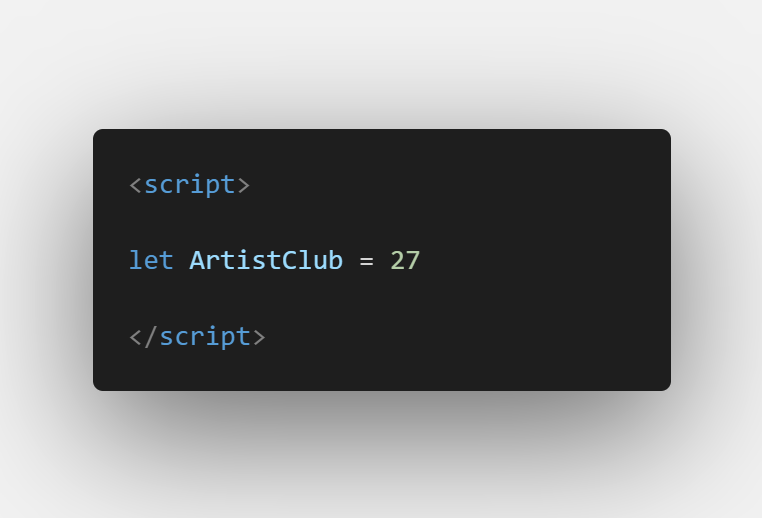
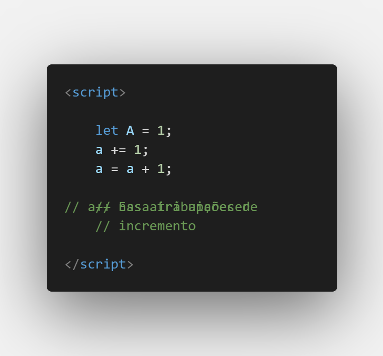
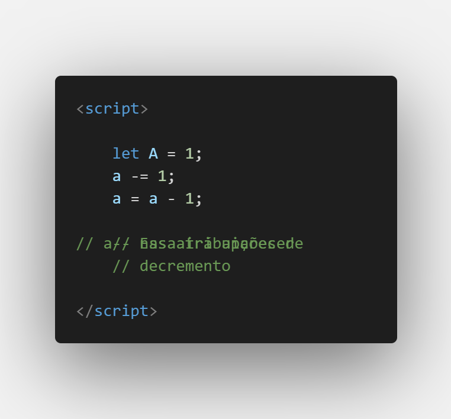
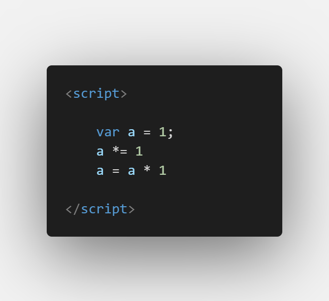
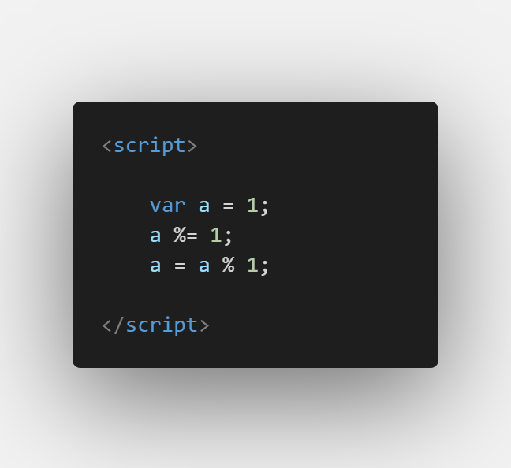
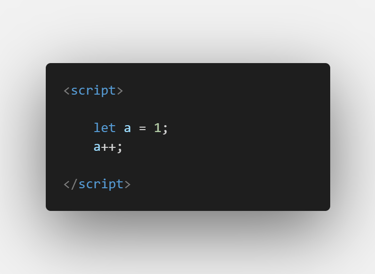
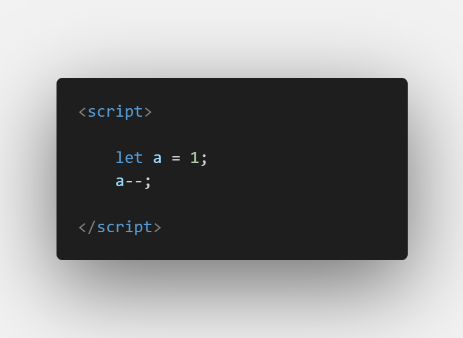

Aula 7/26 - Atribuições
Em JavaScript, "atribuições" referem-se ao processo de atribuir um valor a uma variável ou propriedade. É uma operação fundamental em programação que permite armazenar e manipular dados. Existem vários operadores de atribuição em JavaScript que podem ser usados para realizar diferentes tipos de atribuições. Alguns dos operadores de atribuição mais comuns incluem:
Atribuição Básica (=):
O operador de atribuição mais simples é o sinal de igual (=). Ele atribui o valor à variável à esquerda.

Atribuição com Operadores de Cálculo (+=, -=, =, /=, %=):
Esses operadores combinam uma operação matemática com uma atribuição.





Atribuição de Incremento/Decremento (++/--):
Esses operadores são usados para aumentar ou diminuir o valor de uma variável em uma unidade.


Complemento de aula:
A partir daqui serão atribuições mais complexas que exigirão um bloco de aula para cada uma.
Atribuição Condicionada (Operador Ternário ?)
Permite atribuir um valor a uma variável com base em uma condição.
let age = 20;
let canVote = (age >= 18) ? "Sim" : "Não"; // Se age for maior ou igual a 18, canVote será "Sim", caso contrário, será "Não"
Atribuição com Destruturação ([a, b] = [1, 2])
Atribui valores de elementos de uma estrutura (como um array) a variáveis individuais.
let [a, b] = [1, 2]; // a terá o valor 1, b terá o valor 2
Atribuição com Propriedades de Objetos (obj.prop = value)
Atribui um valor a uma propriedade de um objeto.
let person = {};
person.name = "Alice"; // Atribui o valor "Alice" à propriedade name do objeto person
Atribuição com Descanso (...rest)
Atribui um conjunto de valores restantes a uma variável (usado em desestruturação).
let [first, ...rest] = [1, 2, 3, 4]; // first será 1, rest será [2, 3, 4]
Atribuição com Propriedades Computadas (obj[propName] = value)
Atribui um valor a uma propriedade de um objeto usando o nome da propriedade calculado em tempo de execução.
let propName = "age";
let person = {};
person[propName] = 30; // Atribui o valor 30 à propriedade "age" do objeto person
Atribuição com Operadores Bit a Bit (<<=, >>=, &=, |=, ^=)
Executa operações bit a bit e atribui o resultado à variável à esquerda.
let binaryValue = 0b1100; // Representação binária de 12
binaryValue <<= 2; // Desloca os bits para a esquerda por 2 posições; Resultado: binaryValue = 0b110000 (48 em decimal)